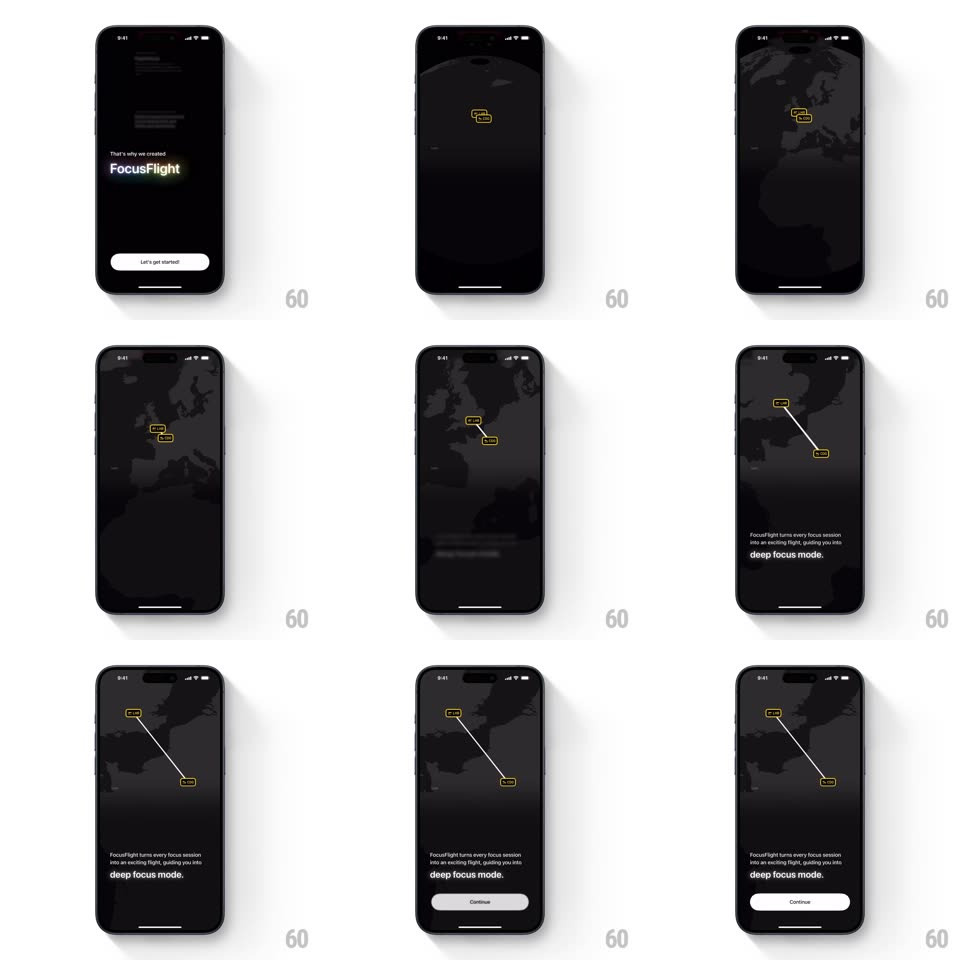

Media
Frame-by-frame

Rebuild this animation 1:1: FocusFlight's get-started zoom - the intro line "That's why we created FocusFlight" zooms through the screen into a dark world map where a flight route draws itself between two yellow airport chips, landing on the deep-focus caption and Continue button.

Rebuild this animation 1:1: FocusFlight's get-started zoom - the intro line "That's why we created FocusFlight" zooms through the screen into a dark world map where a flight route draws itself between two yellow airport chips, landing on the deep-focus caption and Continue button. ## Integration Integration: stack-agnostic spec - springs given as stiffness/damping, timed motions as duration + curve; map every value to your framework and animation library of choice. ## Scene Black intro screen: small copy over the bold "FocusFlight" title, white "Let's get started!" pill. Map state: dark dotted world map, two yellow-outlined airport chips with a white route line arcing between them, caption "FocusFlight turns every focus session into an exciting flight, guiding you into deep focus mode.", and a Continue pill. ## Motion spec Pattern: continuous zoom-through transition, ~2.5s. - Launch: tapping the pill starts a camera zoom into the title (scale 1 -> 8, 800ms, ease-in) as the title blurs and dissolves. - Map: the world map fades in mid-zoom (400ms) and the camera settles on the region (scale 8 -> 1, ease-out, 700ms) - one continuous camera move, no cut. - Route: airport chips pop in (scale 0.6 -> 1.05 -> 1, spring ~380/20, 150ms apart), then the route line draws between them (stroke, 600ms, ease-in-out) with a small plane/dot traveling it. - Settle: the caption fades in (300ms), then the Continue pill slides up (250ms, +150ms). ## Calibration - The zoom reads as flying into the map - text grows past the camera, map arrives beneath. - The route arc bows slightly (great-circle feel), not a straight line. ## Reduced motion Intro crossfades to the composed map (300ms); route appears drawn. ## Don't miss - The map is dark with dotted landmasses - yellow chips are the only color. - The traveling dot keeps looping the route after it draws (3s loop).